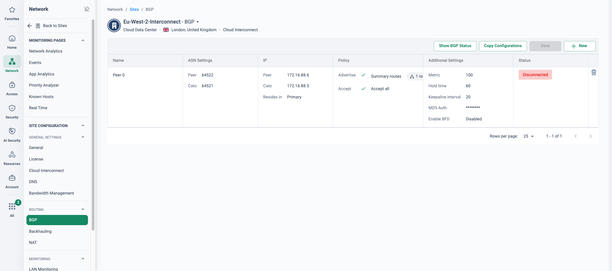

When a tunnel isn't enough
For most cloud estates, a vSocket or an IPsec tunnel is exactly right: fast to deploy, encrypted end to end, and good for the vast majority of application traffic. But every tunnel-based on-ramp shares two properties that matter for datacentre-class flows: the last mile rides the public internet, and the traffic pays a tunnel tax — per-tunnel bandwidth ceilings and encryption overhead on every packet.
For storage replication, backup and restore, bulk data movement between DC and cloud, or latency-sensitive traffic between environments, the business wants what a leased line used to give it: deterministic latency, sustained high throughput, and a path nobody else's traffic can congest. Cloud Interconnect is how Cato delivers that — a dedicated private connection between two peers, giving lower latency and higher bandwidth than the public internet.
This use case complements the vSocket and IPsec story in Cloud Datacentre Integration — it does not replace it. Most estates mix on-ramps: tunnels for agility, interconnect circuits where the flows justify a wire.
When to choose which on-ramp
Three ways onto the WAN, all available side by side in one account. The right answer is usually a mix — pick per region and per workload, not once for the whole estate.
| On-ramp | Footprint | Throughput character | Typical use | In your demo tenant |
|---|---|---|---|---|
| vSocket | Cato virtual appliance inside the VNet/VPC, deployable as an HA pair; encrypted tunnels to the nearest PoP | Strong for general application traffic; tunnel-based, so encryption overhead applies on every flow | The full site experience in the cloud — WAN optimisation, QoS, deep analytics | an AWS vSocket site (eu-west-2) — HA pair on the London PoP, connected |
| IPsec | No footprint at all — IKEv2 from the cloud provider's native gateway to the Cato PoP | Bound by the provider gateway's per-tunnel limits; internet last mile | Fast onboarding of a region, or estates already standardised on cloud VPN hubs | an Azure vWAN hub site (London PoP) |
| Cloud Interconnect | No appliance and no tunnel — a dedicated layer-2 circuit into the Cato PoP via an exchange fabric or physical cross-connect | Deterministic latency and high sustained throughput; no per-tunnel ceilings or encryption overhead in the circuit | DC-class flows: replication, bulk data movement, latency-sensitive DC-to-cloud traffic | a Cloud Interconnect site (configuration example) |
“Which of your cloud flows run over ExpressRoute or Direct Connect today — and once that circuit lands, which console owns the policy between it and the rest of your WAN? What would it cost to give your private datacentre the same treatment?”
Where this sits in the Cato SASE platform
- Public clouds land their private-link services on an exchange fabric such as Equinix Fabric or Megaport.
- A private datacentre or colo cage joins by physical cross-connect or the same fabric; no socket, no tunnel.
- One VLAN-coordinated layer-2 circuit carries both into the Cato PoP, where the security stack already sits.
- The interconnect site is just a site: same policy, visibility and backbone routing as every other site.
One layer-2 front door into the backbone
Cloud Interconnect connects one network directly to another through a datacentre cloud exchange, delivered with a service-provider partner — Equinix (Cloud Exchange) Fabric or Megaport SDCI. A single VLAN ID is coordinated across all parties: the cloud provider, the colocation/exchange operator, and the Cato PoP. Two patterns use the same front door:
- Public cloud — the provider's private-link service (the ExpressRoute / Direct Connect / Partner Interconnect / FastConnect class of service) lands on the exchange fabric, which cross-connects into the Cato PoP. Per-cloud Learning Center guides cover Azure, GCP and Oracle, and AWS is equally supported — the Cloud Interconnect site in your demo tenant is an AWS one.
- Private datacentre — a customer DC or colo cage connects via physical cross-connect or the exchange fabric into the nearest Cato PoP. No socket appliance, no IPsec tunnel anywhere in the path.
Either way, what lands in the CMA is simply a site of type “Cloud Interconnect” — a first-class citizen of the WAN with the same policy, the same visibility and the same backbone routing as every socket, vSocket and IPsec site.
Deterministic performance
A private connection between two peers — lower latency and higher bandwidth than the public internet, with no per-tunnel ceilings or encryption overhead in the circuit.
Nothing to deploy in the path
No socket appliance, no vSocket VM, no IPsec gateway to size and patch. The circuit terminates at the Cato PoP; the security stack is already there.
A first-class site on the WAN
Same policy, same visibility, same backbone routing as every socket and vSocket site — one topology view, one WAN firewall, one audit trail.
One pattern, every peer
Azure, GCP, Oracle and AWS use the same exchange-fabric front door — and a private datacentre or colo cage walks through it the same way.
From availability check to routed site
-
Check PoP availability
Cato publishes the list of Cloud Interconnect PoP locations and providers with provisioning lead times. Locations marked immediately available can be provisioned on demand from the CMA; the rest are coordinated with your Cato representative.
-
Order the circuit
For public cloud, order the provider's private-link service (the ExpressRoute / Direct Connect / Partner Interconnect / FastConnect class) landing on the exchange fabric — Equinix Fabric or Megaport. For a private DC, order the fabric port or a physical cross-connect from your cage.
-
Coordinate the VLAN
A VLAN ID is agreed across all parties — the cloud provider, the colocation/exchange operator and the Cato PoP — so the layer-2 handoff lines up end to end.
-
Create the site in the CMA
Network → Sites
Create a new site and choose site type Cloud Interconnect — it sits alongside socket, vSocket and IPsec in the same site-creation flow.
-
Route and secure like any site
Declare the site's ranges, and the WAN firewall, network rules and analytics apply exactly as they do to every other site. No parallel policy domain for the circuit.
Provisioning lead times vary by location and provider — check the availability list early and put the circuit order at the front of the project plan, not the end.
How to run the demo
A Cloud Interconnect site exists in your demo tenant as a configuration example only — it is not currently passing traffic, and a live traffic view needs a provisioned circuit. Walk the site configuration and the positioning; don't promise live traffic graphs from it. For live charts, pivot to the vSocket site in step 5.
-
Frame the choice
Open on the on-ramp table above: three ways onto the WAN, run side by side in your demo tenant. Clouds here are first-class sites, however they connect.
-
Show the interconnect site
Network → Sites
A Cloud Interconnect site has site type Cloud Datacenter, connection type Cross-Connect and a description like “AWS Cloud Interconnect Site”, homed to its nearest PoP. Create one in the site-creation flow, or open the configuration example in your demo tenant — either way, that one line is the whole deployment story.
-
Walk the configuration
Step through the site settings and point out what is absent: no socket serial, no tunnel parameters, no appliance to manage. The circuit terminates at the PoP; the CMA only needs to know the site and its ranges.
-
Show clouds as first-class WAN nodes
Monitor → Topology
The interconnect site sits in the same topology as London DC, Manchester DC and the branches — one map, one WAN, regardless of on-ramp.
-
Contrast with a live cloud site
Open an AWS vSocket site (eu-west-2) — the vSocket HA pair homed to the London PoP, connected and passing traffic. Show its real-time analytics and make the point: the moment an interconnect circuit goes live, it gets exactly this same visibility.
-
Close on one policy set
Security → WAN Firewall
One rulebase governs branch, DC, vSocket, IPsec and interconnect traffic alike — no separate firewall estate bolted onto the circuit, unlike a traditional premium interconnect build.
How to prove it in the customer's tenant
Cloud Interconnect is the one use case in this library where physics sets the timeline: a dedicated circuit has provider lead times measured in weeks to months, and no CMA click changes that. So this PoV runs on two tracks. Track A — design validation — is always achievable inside a standard 30-day PoV: the site built in the CMA, feasibility confirmed against Cato's published availability list, and the circuit order fully planned. Track B — live proof over the circuit — only exists once the circuit does, which for most engagements means after the PoV window. Say that at the scope workshop, split the success criteria accordingly, and run the whole thing inside the frame from Running a Cato PoV: criteria agreed before anything is configured, every artefact dated against its criterion. The same honesty applies here as in the demo runbook above — a Cloud Interconnect site with no circuit behind it is a configuration example, not a traffic source, and pretending otherwise costs you the credibility the PoV exists to build.
Success criteria — split by track
Three criteria the PoV always completes, and three that are contingent on circuit delivery. Put the Track B rows on the register with a target date driven by the provider lead time, not the PoV end date — never promise them inside a 30-day PoV unless the circuit already exists:
| Track | Criterion | What we demonstrate | Evidence artefact | Where it lives |
|---|---|---|---|---|
| A | Feasibility confirmed | The customer's DC/colo and cloud regions mapped against Cato's Cloud Interconnect availability list — PoP, fabric provider and lead time named for each planned circuit | Dated extract of the relevant availability rows plus the agreed PoP choices, on the register | KB availability page + the workshop record |
| A | Site design built in the CMA | A Cloud Interconnect site created in the customer's tenant — connection type Cross-Connect, primary and secondary PoP, licensed bandwidth, both BGP peers defined with MD5 — reviewed with their network team | Site configuration screenshots and the Audit Trail entries for its creation | Network → Sites → Site Configuration → Cloud Interconnect |
| A | Circuit order plan signed off | Who orders what, in which portal, with which VLAN plan and /30 peering addressing — including the LOA/cross-connect step for a physical DC and dates against the published lead time | A one-page order plan (design sheet below) accepted by the customer's DC/network owner | The evidence register |
| B | BGP up, site connected | Both BGP peers established over the circuit, routes learned and advertised, site green in Topology | BGP status showing learned/advertised subnets; Test Connectivity pass; the site's Connected event | Network → Sites → Site Configuration → Cloud Interconnect · Monitor → Topology |
| B | Performance vs the incumbent path | Latency and jitter baseline over the circuit against the same flow over today's IPsec/internet path, and a sustained transfer at the ordered rate | Side-by-side timed transfers and round-trip figures, same file, same hour, both paths | Network → Sites → Site Monitoring → Real Time · Monitor → Topology |
| B | Failover to a secondary transport | Primary peer taken down in a change window — traffic swings to the secondary PoP link (or the retained IPsec/vSocket path) and fails back cleanly | BGP peer state-change notifications and the before/during/after routing table captures | Home → Events · Monitor → Topology |
- Lead-time reality on the table first. Cato's availability list (checked 31 Oct 2026; the KB page was last updated 25 Aug 2026) spans on-demand provisioning from the CMA at "Immediately available" PoPs to lead times of three weeks to three months elsewhere — and some PoPs have no interconnect provider at all. Which side of that line the customer's location falls on decides whether Track B is even conceivable in-window.
- Licensing: a Cloud Interconnect site licence at the ordered bandwidth — 500 Mbps is the documented minimum on an Enforcement Model licence; the Bursting Model (from January 2027) sets no minimum, so check which model the account is on.
- An incumbent path to beat: the Track B baseline needs the existing IPsec tunnel or vSocket on-ramp still live for the same flows — do not decommission it mid-PoV; it is both the comparator and the fallback transport.
- Provider-side access: rights to order the private-link circuit (Direct Connect / ExpressRoute class) in the cloud account, or the exchange-fabric port / physical cross-connect at the DC — plus whoever signs the colo's paperwork in the room at the workshop.
- BGP details agreed early: ASNs both sides, /30 peering subnets, MD5 keys (mandatory), VLAN IDs — one sheet, all parties.
- Not needed: TLS inspection, identity integration or any security-policy build — this is a transport PoV. Keep those off the critical path.
Configuration walkthrough
-
Confirm feasibility against the published list (Track A)
Open the Cloud Interconnect availability page with the customer and find their PoPs. As checked on 31 Oct 2026: Manchester is Equinix and Megaport, both immediately available; London is Megaport immediately available or Equinix at three weeks; the global spread runs from on-demand to three months, with Megaport on-demand CMA provisioning flagged as Early Availability. Screenshot the rows on the day and date the capture — this list moves, and the dated extract is the feasibility artefact.
-
Write the circuit order plan (Track A)
Per the getting-started guide, the customer creates the circuits on the provider side — the private-link service (Direct Connect, ExpressRoute, Partner Interconnect, FastConnect) landing on the exchange fabric (Equinix Fabric or Megaport SDCI) — then Cato provisions its side; non-immediate locations are coordinated with the Cato representative and take from a few weeks to several months. For a private DC, add the colo step: the LOA/cross-connect authorisation is issued by the exchange or colocation operator when the port is ordered — that paperwork lives in the colo's ticket queue, not the CMA, and it is the classic hidden fortnight. Name an owner and a date for every line:
# Interconnect design sheet — agreed at the workshop, one copy on the register Cato PoP (primary / secondary): Manchester / London Fabric provider: Megaport SDCI # per availability list, 31 Oct 2026 Circuit: AWS Direct Connect hosted connection, 1 Gbps VLAN IDs (per virtual i/f): 1101 (primary) · 1102 (secondary) BGP peering (primary): 169.254.10.0/30 — Cato .1, peer .2 BGP peering (secondary): 169.254.10.4/30 — Cato .5, peer .6 ASNs: Cato side 65010 · DX gateway 64512 MD5 keys: set both peers — mandatory Owners & dates: circuit order — customer cloud team, wk 1 LOA / colo cross-connect — DC owner, wk 1 CMA site + BGP — SE with network team, wk 2
-
Build the site in the CMA (Track A)
Network → Sites
Create the Cloud Interconnect site in the customer's tenant exactly as the demo runbook walks it in yours: for public cloud, connection type Public Cloud Connection with the provider (e.g. AWS Direct Connect plus account ID), primary and secondary Cato PoP, destination cloud region, bandwidth matching the licence, and the peering subnets from the design sheet (Cloud Interconnect for AWS). What lands is a site with connection type Cross-Connect and no socket, tunnel or appliance anywhere in its definition. Until the circuit is live it will sit disconnected with zero hosts — that is correct, expected, and exactly what the Track A criterion claims: the design is real, reviewable and ready, and nothing more.

Site Configuration → Cloud Interconnect → New Connection — the whole Track A build is this one panel. Walk the three steps: connection type Public Cloud Connection with the provider (AWS Direct Connect here — the same picker offers Azure ExpressRoute, OCI FastConnect and Google Cloud Interconnect) and the account ID; then the Cato PoP paired with its fabric — Amsterdam | Equinix Fabric — the bandwidth tier (1,000 Mbps) and destination region eu-central-1; then the peering subnet from the design sheet. Point at what is absent: no socket, no tunnel, no appliance anywhere in the form — and the Secondary section below repeats the same panel against the second PoP. -
Define both BGP peers (Track A)
Network → Sites → Site Configuration → Cloud Interconnect
Two peers, primary and secondary, from the design sheet: Cato ASN, peer ASN, peer IP, and MD5 authentication — mandatory for Cloud Interconnect sites. Redundancy is active/passive only: BGP decides the live circuit, with the primary preferred by metric (primary ≈90, secondary ≈100) and AS-PATH prepending steering the failover (Cloud Interconnect sites). Switch on BGP email notifications for peer state changes now — when the circuit lands, the session coming up is itself a dated evidence artefact, and the same notifications book-end the Track B failover test.

Site Configuration → BGP — the peer definition exactly as the design sheet dictates: Cato ASN 64521 against peer ASN 64522, the /30 pair 172.16.88.5 and .6, residing in Primary, advertising summary routes at metric 100 with hold 60, keepalive 20 and MD5 authentication set (masked) — the secondary peer repeats this with its failover metric. The red Disconnected chip is Track A told honestly: no circuit terminates here yet, and that is precisely what the criterion claims — the design real, reviewable and ready. When the cross-connect lands, Show BGP Status is where the session coming up becomes the dated evidence artefact. -
Verify the circuit when it lands (Track B)
Monitor → Topology
The site needs at least one BGP peer established to show as connected. Walk the verification set from the AWS guide: Test Connectivity for ICMP reachability across the circuit, BGP status for learned and advertised subnets, the routing table for the dynamic routes and next hop, and LAN monitoring probing the primary circuit continuously. Capture each one dated — this pack is criterion B1 done.
![CMA Site Configuration → Cloud Interconnect for a cloud data-centre site in London: the Primary section holds one AWS Direct Connect connection in region eu-west-2 with the account and connection IDs redacted, fabric provider Equinix with an S-VLAN ID and 50 Mbps bandwidth, PoP location Manchester, network settings for a /30 subnet with Cato IP and site IP, and a Connection Status column with red crosses for Connectivity and BGP and green ticks for Cloud Provider and Fabric Service Provider, beside a Test Connection link.](../assets/img/cma-ci-configured.png)
Site Configuration → Cloud Interconnect (lab tenant) — a saved Direct Connect connection on Equinix at the Manchester PoP. Read the Connection Status column as the circuit-day checklist: Cloud Provider and Fabric Service Provider are green, BGP and Connectivity red because no circuit is live in this lab — BGP can only come up once both provider layers connect. Test Connection refreshes the status. The 50 Mbps is a lab value, below the 500 Mbps Enforcement Model minimum in the prerequisites. -
Run the Track B evidence days
Network → Sites → Site Monitoring → Real Time
Baseline: the same timed transfer over the circuit and over the incumbent IPsec/internet path, same file, same hour, with round-trip and jitter figures from both — the deterministic-latency claim proven side by side rather than asserted. Throughput: a sustained transfer at the ordered rate (parallel streams, not one TCP flow), captured from the Real Time graphs. Failover: in a booked change window, take the primary peer down on the provider side, watch traffic swing to the secondary and the peer state-change notifications land, then fail back. Every capture goes on the register dated, against its criterion, on the day.
What good output looks like
At the wrap-up, Track A stands on three artefacts: the dated availability extract with the chosen PoPs, the site-configuration capture set showing a complete Cross-Connect site design in the customer's own tenant, and the signed-off order plan with owners and dates. If the circuit landed in-window, Track B adds the BGP status and Test Connectivity pack, the side-by-side path comparison table, the sustained-throughput graph and the failover event trail. If it did not — which is the common case — the wrap-up says so plainly: Track A complete, circuit ordered on date X with a published lead time of Y, Track B scheduled as the first item on the next-steps register. That sentence, with its dates, is a stronger close than a promise nobody can keep inside 30 days.
Troubleshooting
LOA / provisioning stalls
The cross-connect authorisation and patch are executed by the exchange or colo operator on their clock, and non-immediate Cato PoPs need manual back-end configuration coordinated with your Cato representative. Neither shows in the CMA — track both by date on the register and chase weekly, or the "quiet fortnight" eats the window.
Provider says up, CMA says down
Follow the XOps playbook: on Site Configuration → Cloud Interconnect, check whether errors sit in the connectivity/BGP columns or the Cloud Provider / Fabric Service Provider columns, and run Test Connection. If BGP IPs or service keys changed provider-side, re-apply them in Cato — stale keys are the classic cause.
VLAN mismatch
One VLAN ID per circuit, agreed across every party — cloud provider, exchange operator, Cato PoP — and each virtual interface needs its own unique VLAN. A single transposed digit in one portal leaves layer 2 dark with nothing to ping. Re-read the design sheet against all three portals before raising tickets.
BGP session won't establish
Work the short list: MD5 key mismatch (it is mandatory, so both sides must set the same key), ASN swapped between Cato side and provider gateway, peer IPs not in the same /30, or the peering subnet differing between the CMA and the provider's virtual interface. The BGP columns on the Cloud Interconnect tab localise which peer is at fault.
Asymmetry with the fallback path
If the incumbent IPsec tunnel still advertises the same ranges during coexistence, flows can egress over the circuit and return through the tunnel — baselines then measure a mongrel path. Prefer the interconnect deliberately (BGP metrics/route preference), verify with the routing table that both directions use it, and keep the tunnel as failover only.
Throughput below the ordered rate
A single TCP stream will not fill a high-bandwidth circuit — test with parallel streams. Then check the CMA site bandwidth matches the licence and the provider-side port/virtual-interface speed matches the order; the lowest of the three is the ceiling you are measuring.
Gotchas & exit
- The availability list is a living document. The figures on this page were checked on 31 Oct 2026 against a KB page last updated 25 Aug 2026 — re-check on the day of the workshop and date your extract; a provider or lead time can change under you.
- Track B is usually post-PoV. A three-week lead time on a 30-day PoV leaves no margin; three months makes it structural. Scope Track B onto the next-steps register with provider-driven dates and treat its later execution as the expansion motion, not a slipped promise.
- Active/passive only. Redundant circuits fail over; they do not load-share. Do not let a criterion imply aggregate bandwidth across both.
- Bandwidth is licensed, with a 500 Mbps floor on Enforcement Model accounts — the circuit, the licence and the CMA site figure need to agree before anyone measures anything.
- Megaport on-demand provisioning from the CMA is Early Availability at limited release — confirm it applies to the customer's account before the demo of "provision it from the console" becomes a criterion.
If the engagement stops after Track A, delete the Cloud Interconnect site from Network → Sites, and make sure any provider-side orders are cancelled before their billing starts — fabric virtual circuits and hosted connections bill from activation whether or not Cato ever sees a packet. If Track B ran, agree whether the circuit converts to production or is decommissioned per the commercial agreement, and remove the BGP notification recipients added for the PoV. The design sheet, the dated availability extract and the evidence register survive either way — they are the input to the production rollout, whichever way the decision lands.
Resources
Documentation
Not sure a circuit is the right on-ramp at all? The Cloud Connectivity page has a guided vSocket vs IPsec vs Interconnect pick that ranks the three against your throughput, encryption, HA and timeline answers.